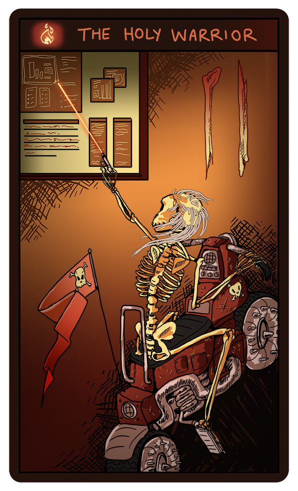
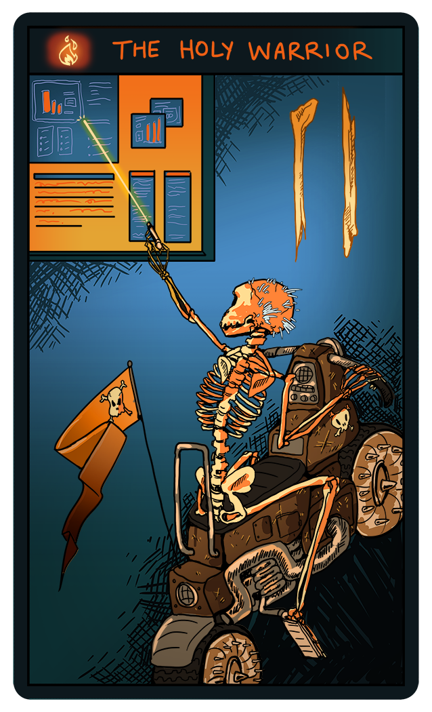

Holy Warrior



Values-oriented reformer, figures out what to do about broken things. You get stuck crying wolf and often people stop paying attention. You see yourself as among the few who have recognized the corruption and decay in the system and the stupidity and pain it causes. You have strong views and ideas about reforming the system and are though you are not ambitious, you are willing to help “lead the revolution” if necessary. You have no patience for rules and systems and have a deep and uncompromising sense of what is right and wrong and what needs to be done. You want the system to change and are not happy with just taking care of yourself by exploiting it. The story of the holy warrior is the messianic story ending in martyrdom.
Home